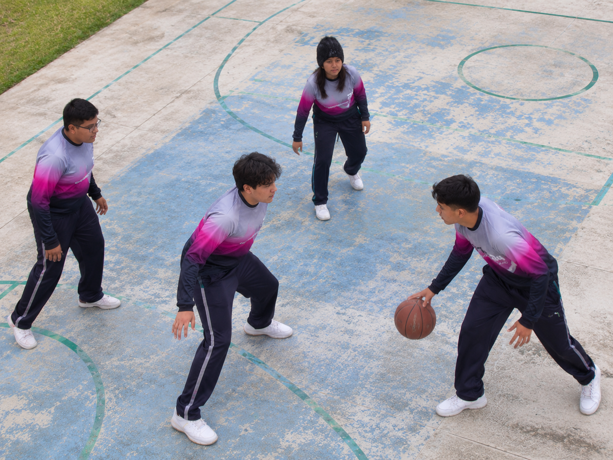
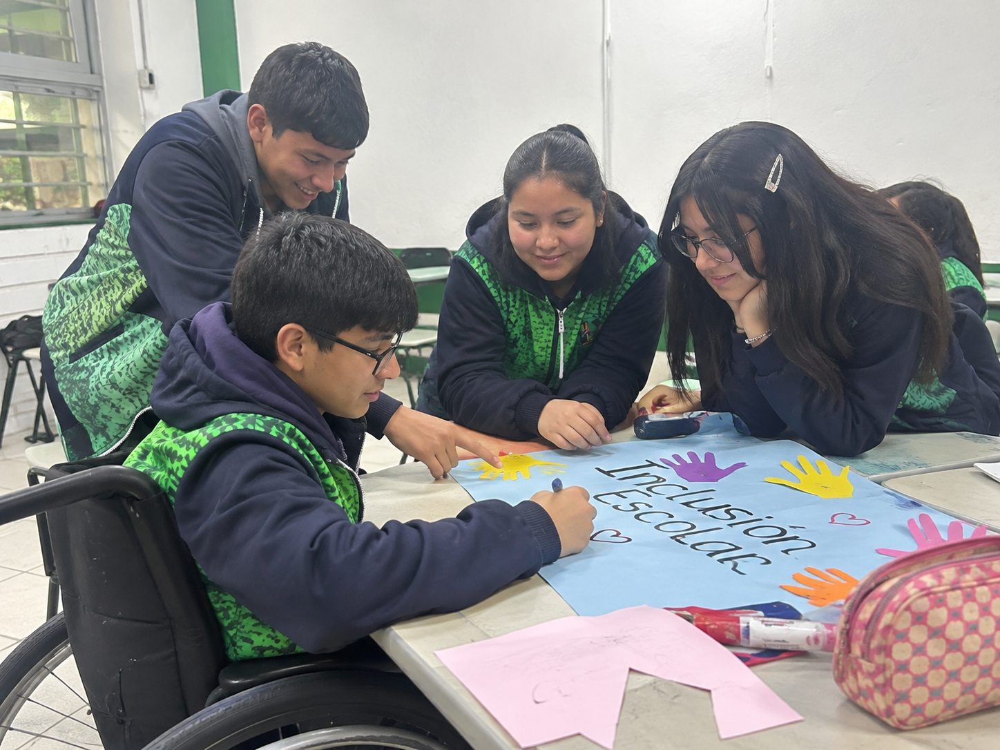

Bienvenidos a Código Humano
La paz también se programa. Cada decisión que tomamos dentro de nuestra escuela puede mejorar o perjudicar la convivencia.
Esta plataforma tiene como objetivo promover el respeto, la empatía, el diálogo y la cooperación entre estudiantes y profesores del CECyTE 24.

Datos del proyecto
Institución: CECyTE 24
Proyecto: Código Humano
Ámbito: Académico
Alumnos:
Miguel Angel Ortega Pérez
Marco Antonio Cortez Valencia
Josue Nahum Fernandez Lima
Janeth Saldaña Hernandez
Carlos Alexander Rosete Pluma
Grupo: 3C Programacion
¿Qué ruta podemos programar?
Una ruta donde los conflictos no se resuelvan con insultos o violencia, sino mediante decisiones responsables y pacíficas.
1. Apertura: Identifico mi realidad
¿Qué es la Cultura de la Paz?
La Cultura de la Paz es un conjunto de valores, actitudes y comportamientos que promueven el respeto a los derechos humanos, el rechazo a la violencia, el diálogo y la solución pacífica de conflictos.

¿Por qué es importante en la escuela?
Porque permite que estudiantes, docentes y personal escolar convivan en un ambiente seguro, donde todas las personas puedan aprender, participar y expresar sus ideas sin miedo a ser discriminadas.
Las cinco dimensiones del bienestar integral
Bienestar emocional
Reconocer nuestras emociones y aprender a manejarlas.
Bienestar social
Mantener relaciones basadas en el respeto y la cooperación.
Convivencia
Resolver desacuerdos sin recurrir a insultos o agresiones.
Bienestar académico
Estudiar en un ambiente de confianza, participación y aprendizaje.
Bienestar físico
Cuidar nuestra salud y evitar situaciones que pongan en riesgo nuestra integridad.

Problemas que afectan la convivencia escolar
Reconocer estos problemas es el primer paso para buscar soluciones que beneficien a toda la comunidad escolar.
2. Desarrollo: Programo mi Ruta de Paz
Resolver un conflicto requiere seguir una secuencia de acciones. Al igual que en programación, cada paso tiene una función importante.

Mi código de paz: 7 acciones
Evito reaccionar impulsivamente cuando estoy enojado o molesto.
Reconozco lo que siento antes de responder.
Permito que la otra persona explique su punto de vista.
Expreso lo que pienso con respeto, sin gritar ni insultar.
Propongo soluciones justas que no perjudiquen a nadie.
Elijo junto con la otra persona una solución adecuada.
Cumplo los acuerdos y reflexiono sobre lo que aprendí.
Diagrama de flujo de mi Ruta de Paz
NO: Me tranquilizo y, si es necesario, busco ayuda de una persona de confianza.
SÍ: Escucho y expreso mi opinión.
NO: Busco nuevas alternativas o mediación.
SÍ: Cumplo el acuerdo y evalúo el resultado.
Algoritmo de paz
MIENTRAS exista un conflicto:
- Me detengo.
- Identifico mis emociones.
- Escucho a la otra persona.
- Dialogo con respeto.
- Busco soluciones.
- Propongo acuerdos.
- Evalúo el resultado.
SI el acuerdo funciona, ENTONCES lo cumplo y mantengo el respeto.
SI NO funciona, busco nuevas alternativas y apoyo de orientación.
FIN MIENTRAS.
Situaciones de la vida escolar
Un estudiante recibe comentarios ofensivos por su forma de hablar.
Evitar participar en las burlas, apoyar al compañero afectado y comunicar la situación a un docente u orientación escolar. No se debe obligar a la víctima a enfrentar sola a quien la agrede.

Un alumno considera que su calificación no corresponde al trabajo que entregó.
Solicitar una explicación con respeto, revisar los criterios de evaluación, presentar las evidencias del trabajo y buscar un acuerdo justo.
Dos estudiantes discuten porque uno considera que el otro no participa en las actividades.
Escuchar a ambos, distribuir responsabilidades, establecer fechas de entrega y revisar el cumplimiento de los acuerdos.

Actividad interactiva: Toma una decisión
Un compañero se burla de otro estudiante durante una exposición. ¿Qué harías?
3. Cierre: Mi compromiso con la paz
La Cultura de la Paz no se construye únicamente con palabras, sino con acciones que realizamos diariamente.

Mis compromisos personales
- Escuchar antes de juzgar.
- Respetar a mis compañeros y profesores.
- Evitar las burlas y la discriminación.
- Resolver desacuerdos mediante el diálogo.
- Pedir ayuda cuando un conflicto lo requiera.
Compromisos colectivos
Como comunidad escolar podemos establecer acuerdos para mejorar la convivencia:
- Respetar las diferentes opiniones.
- Trabajar en equipo sin excluir a nadie.
- Evitar la violencia verbal y física.
- Apoyar a quienes necesitan ayuda.
- Promover espacios de diálogo.
Mi compromiso personal
Escribe una acción que realizarás para mejorar la convivencia escolar.
Mensaje final
"La paz no es solamente la ausencia de conflictos; es aprender a resolver nuestras diferencias con respeto, diálogo, empatía y cooperación".
Mi compromiso comienza con mis decisiones. Cada acción respetuosa contribuye a construir una escuela más segura, inclusiva y pacífica.
Recursos y fuentes de consulta
Para conocer más sobre la Cultura de la Paz, la convivencia escolar y los derechos humanos, puedes consultar las siguientes instituciones.
Fuentes confiables
- UNESCO. (s. f.). Cultura de paz y no violencia. Organización de las Naciones Unidas para la Educación, la Ciencia y la Cultura. https://www.unesco.org/es
- UNICEF. (s. f.). Protección de niñas, niños y adolescentes. https://www.unicef.org/es
- Organización Mundial de la Salud. (s. f.). Salud y bienestar. https://www.who.int/es
¿Dónde pedir ayuda?
Si tienes un problema de convivencia escolar, puedes acudir a orientación educativa, tutorías, un docente de confianza o las autoridades escolares.
Si existe violencia, acoso o una situación de riesgo, es importante solicitar apoyo y no intentar resolverla sin ayuda.

Créditos
Proyecto académico elaborado para promover la Cultura de la Paz en el CECyTE 24.
Elaborado por: Miguel Angel Ortega Pérez y Chat GPT
Grupo: 3C Programación